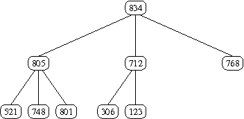

A printable PDF is available.
Assignment 4 -- Comparing Heapsort Alternatives
Due:
Monday, November 9
Objective: The objective of this assignment is for students to experiment with variations of the heapsort algorithm, including a degree-3 heap and variations with and without the O(n) time "makeHeap" procedure.
High-Level Description: The idea of a binary heap is easy to extend to trees with larger degree. For any constant k, a degree k max-heap is a complete k-ary tree in which the key at any node is greater than or equal to the keys in all of its children. Here's an example of a degree 3 max-heap:
Such heaps can be mapped to arrays in a manner similar to what you've seen for binary heaps, and insert and delete operations can still be done in O(logn) time.
Details:
On the class web page (and on the cmpunix machine), I have
provided you with
code for a binary heap, which basically the code we
experimented with in class, but cleaned up and with comments added.
This code includes the functions bubbleUp and bubbleDown
that operate on standard binary heaps. The first new sorting function
you should provide uses a bubbleUp based technique for creating
the heap -- in other words, the heap should be created by doing an
"insert" for each data element in which the new element is bubbled
up the heap to the correct location. Note that this replaces the
O(n) makeHeap procedure with an O(nlogn) heap
construction, so part of this assignment is to see what difference
this makes in practice.
Next, create degree-3 versions of the
bubbleUp and bubbleDown functions (suggestion: you
could consider calling these bubbleUp3 and
bubbleDown3). Then you can use these functions to make two new
sorting functions that are similar to your existing binary heap
functions, but using the degree-3 bubbling functions.
In the end, you will have four sorting functions, and they should all
take exactly the same parameters so that you can simply change the
name of the function used in main and re-compile in order to
test the efficiency of the different sorting functions. Please use
the names below (exactly!):
void hsort(int data[], size_t n); // Standard heapsort - provided void ahsort(int data[], size_t n); // Alt heapsort - using bubbleUp void hsort3(int data[], size_t n); // Degree 3 heap and makeHeap void ahsort3(int data[], size_t n); // Degree 3 heap and bubbleUp3I will test your code by removing your
main function and
inserting my own testing code to see that your sorting functions are
actually sorting properly, so it is vital that you use these names and
exactly these parameters.
When you are developing these sorting functions, you will obviously
want to test thoroughly by printing out answers and making sure that
the sorts are working correctly, but when all four are working
correctly you should remove all print statements and just leave a call
to the sorting function for 2,000,000 items. Run each sorting
algorithm five times, using the "time" command, and record
the 5 times in a table (remember to use the "user time"). Then for
each function throw out the lowest and highest times, and average the
remaining three times, and list this as the "average time" for the
function. Your table should look something like this (these are
completely made-up times -- don't expect them to be anything like the
times you get!):
Finally, write a short analysis comparing the four functions. Don't just report your times, but think about why the different functions behave as they do -- in what ways is a degree-3 heap more efficient than a binary heap, and in what ways is it less efficient? What do you think would happen if you used a degree-4 heap? What about a degree-100 heap?
Function Measured Times Average hsort 1.123 1.119 1.139 1.117 1.121 1.121 ahsort ... ... ... ... ... ... hsort3 ... ... ... ... ... ... ahsort3 ... ... ... ... ... ...
To Turn In: Use the 330submit program (see
Handout 3) in order to turn in your code, using
assignment name assign4. Turn in your table of running times
and analysis along with a printout of your code in class.
Sample Input/Output: There is no sample input/output for this program.